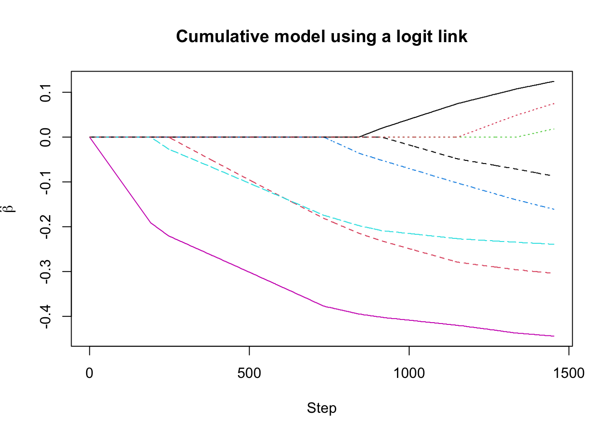

Chapter 7 Ordinal Regression
7.1 Ordinal Logistic Regression
In many applications, the possible values of the response should be thought of as ordered categories.
Examples:
Survey ratings of a product: “poor”, “good”, “excellent”.
Patient reported scale of pain from 1-10.
Different possible responses on a questionnaire.
7.2 Ordinal Regression Details
- With ordinal regression, only the ranking of the different categories is relevant.
Let \(Y_{i}\) represent the ordinal response of interest.
Assume \(Y_{i}\) can take an integer value from 1 to C: \(Y_{i} = 1\), or \(Y_{i} = 2\), …, or \(Y_{i} = C\).
- Although we are assuming \(Y_{i}\) takes numerical values, the ordinal regression analysis would be the same if we assumed that \(Y_{i}\) could take values \(2, 4, 6, ..., 2C\).
The most common regression model for ordinal data is an ordinal logistic regression model.
The ordinal logistic regression model uses a regression model for the “lesser-than probabilities” \(P( Y_{i} \leq c|\mathbf{x}_{i})\).
Specifically, \[\begin{equation} P(Y_{i} \leq c|\mathbf{x}_{i}) = \frac{1}{1 + \exp(-\alpha_{c} + \mathbf{x}_{i}^{T}\boldsymbol{\beta})}, \quad c = 1, \ldots, C-1 \end{equation}\]
This is equivalent to saying that the log-odds (for the event \(\{Y_{i} \leq c\}\)) is a linear function of the covariates: \[\begin{equation} \log \{ \text{odds}_{c}( \mathbf{x}_{i} ) \} = \log\left( \frac{ P(Y_{i} \leq c|\mathbf{x}_{i}) }{ 1 - P(Y_{i} \leq c|\mathbf{x}_{i}) } \right) = \alpha_{c} - \mathbf{x}_{i}^{T}\boldsymbol{\beta} \tag{7.1} \end{equation}\]
- Note that the ordinal logistic regression model is often expressed using the probabilities \(P(Y_{i} > c|\mathbf{x}_{i})\) instead of \(P( Y_{i} > c|\mathbf{x}_{i})\) where it is assumed that \[\begin{equation} \log\left( \frac{ P(Y_{i} > c|\mathbf{x}_{i}) }{ 1 - P(Y_{i} > c|\mathbf{x}_{i}) } \right) = \alpha_{c} + \mathbf{x}_{i}^{T}\boldsymbol{\beta} \end{equation}\]
The regression model (7.1) is often called a proportional odds model.
- This is because the odds ratio for the probability \(P(Y \leq c|\mathbf{x}_{i})\) vs. the probability \(P(Y \leq c|\mathbf{z}_{i})\) does not depend on the value of \(c\).
To see the proportional odds property, note that \[\begin{equation} \frac{ \text{odds}_{c}( \mathbf{x}_{i} ) }{ \text{odds}_{c}( \mathbf{z}_{i} ) } = \frac{ \exp( \alpha_{c} - \mathbf{x}_{i}^{T}\boldsymbol{\beta} ) }{ \exp( \alpha_{c} - \mathbf{z}_{i}^{T}\boldsymbol{\beta} ) } = \exp\left[ (\mathbf{z}_{i}^{T} - \mathbf{x}_{i}^{T})\boldsymbol{\beta} \right] \end{equation}\]
The odds ratio only depends on \(\boldsymbol{\beta}\) and does not depend on the value of \(\alpha_{c}\).
The proportional odds assumption allows the elements of \(\boldsymbol{\beta}\) to have an interpretation that does not depend on \(c\).
Interpretation: If you have only one covariate \(x_{i}\), then a one-unit increase in \(x_{i}\) leads to an increase of \(\beta\) in the log-odds ratio (for the event \(\{Y_{i}\leq c\}\)): \[\begin{equation} \log\left( \frac{ \text{odds}_{c}( x_{i} + 1 ) }{ \text{odds}_{c}( x_{i} ) } \right) = -\beta \end{equation}\]
- The model (7.1) uses a logit link function,
but it’s possible to choose any other link function.
- Common alternative choices are the complementary log-log and probit link functions.
7.2.1 Ordinal Logistic Regression in R
The polr function in the MASS package let’s you fit ordered logistic or ordered probit regression models.
The example dataset in the polr documentation is the
housingdata
## Sat Infl Type Cont Freq
## 1 Low Low Tower Low 21
## 2 Medium Low Tower Low 21
## 3 High Low Tower Low 28
## 4 Low Medium Tower Low 34
## 5 Medium Medium Tower Low 22
## 6 High Medium Tower Low 36## [1] 72 5The syntax for using
polris similar to other common regression-fitting functions in R such aslmorglm.The main thing to be aware of when using
polris that the response variable should be an ordered factor.
## 'data.frame': 72 obs. of 5 variables:
## $ Sat : Ord.factor w/ 3 levels "Low"<"Medium"<..: 1 2 3 1 2 3 1 2 3 1 ...
## $ Infl: Factor w/ 3 levels "Low","Medium",..: 1 1 1 2 2 2 3 3 3 1 ...
## $ Type: Factor w/ 4 levels "Tower","Apartment",..: 1 1 1 1 1 1 1 1 1 2 ...
## $ Cont: Factor w/ 2 levels "Low","High": 1 1 1 1 1 1 1 1 1 1 ...
## $ Freq: int 21 21 28 34 22 36 10 11 36 61 ...The response variable of interest here is
Satwhich represents householder satisfaction.This has 3 possible responses: “Low”, “Medium”, or “High”.
This is a categorical variable with a natural ordering (“Low” is worse than “Medium” which is worse than “High”).
## ## Low Medium High ## 24 24 24
The categorial variables
Sat,Infl,Type, andContdon’t have the “individual-level” data.- Each row just represents one of the 72 possible configurations of these variables.
The variable
Freqactually tells us how many responses we had for each of the 72 categories.To fit this without using the individual-level data, we can use the values of
Freqas weights in an ordinal logistic regression.
- If we want to fit an ordinal logistic regression with
Satas the response andInflas a covariate, we can use the following code:
- The above R code is going to fit the model \[\begin{equation}
\log \left( \frac{ P(Y_{i} \leq c|\mathbf{x}_{i}) }{1 - P(Y_{i} \leq c|\mathbf{x}_{i})} \right) = \alpha_{c} - \beta_{1}x_{i1} - \beta_{2}x_{i2},
\end{equation}\]
- \(Y_{i}\) is the satisfaction level with three levels
- \(x_{i1} = 1\) if influence is medium and \(0\) otherwise
- \(x_{i2} = 1\) if influence is high and \(0\) otherwise.
- To see the estimates of these parameters use the
summaryfunction:
##
## Re-fitting to get Hessian## Call:
## polr(formula = Sat ~ Infl, data = housing, weights = Freq)
##
## Coefficients:
## Value Std. Error t value
## InflMedium 0.5636 0.1036 5.441
## InflHigh 1.2487 0.1248 10.006
##
## Intercepts:
## Value Std. Error t value
## Low|Medium -0.2014 0.0766 -2.6280
## Medium|High 0.9485 0.0802 11.8199
##
## Residual Deviance: 3543.416
## AIC: 3551.416The above coefficient estimates tell us that the odds of low satisfaction given Medium influence level vs. the odds of low satisfaction given a Low influence level is \[\begin{equation} \frac{odds_{c}(\text{Medium Influence})}{odds_{c}(\text{Low Influence})} = \exp(-\hat{\beta}_{1}) = \exp(-0.563) \approx 0.57 \end{equation}\]
- In other words, the odds of having low satisfaction are higher in the low influence group when compared to the high influence group.
Similarly, the odds ratio for the high influence group vs. the low influence group is given by \[\begin{equation} \frac{\text{odds}_{c}(\text{High Influence})}{\text{odds}_{c}(\text{Low Influence})} = \exp(-\hat{\beta}_{2}) = \exp(-1.248) \approx 0.29 \end{equation}\]
From this, you can get the odds ratio for high vs. medium influence levels \[\begin{equation} \frac{\text{odds}_{c}(\text{High Influence})}{\text{odds}_{c}(\text{Medium Influence})} = \exp(-1.248) \exp(0.563) \approx 0.5 \end{equation}\]
The summary output from a
polrfit will also give estimates of the “intercept terms” \(\alpha_{c}\).Since there are only 3 possible levels of the response
Sat, there should only be two possible values of \(\alpha_{c}\).The estimates \(\hat{\alpha}_{c}\) are given in the
Interceptspart of the summary output.The estimate of \(\hat{\alpha}_{1}\) means that the probability that satisfaction is low (i.e., \(Y_{i} \leq 1\)) given low influence is \[\begin{equation} \hat{P}(Y_{i} \leq 1| \text{InflLow}) = 1/[1 + \exp(-\hat{\alpha}_{1})] \approx 0.45 \end{equation}\]
Similarly, the estimated probability that satisfaction is low given medium influence is \[\begin{equation} \hat{P}(Y_{i} \leq 1| \text{InflMed}) = 1/[1 + \exp(-\hat{\alpha}_{1} + \hat{\beta}_{1})] \approx 0.31 \end{equation}\]
In this case, because we are only looking at a single covariate, we can verify these probability estimates with a direct calculation.
The estimate of \(P(Y_{i} \leq 1| \text{InflLow})\) should be equal to the following ratio \[\begin{equation} \hat{P}(Y_{i} \leq 1| \text{InflLow}) = \frac{ N_{satlow, infllow} }{ N_{infllow} } \end{equation}\]
This can be computed with the R code
N_ll <- sum(housing$Freq[housing$Sat=="Low" & housing$Infl=="Low"])
N_l <- sum(housing$Freq[housing$Infl=="Low"])
N_ll/N_l## [1] 0.4497608- A direct estimate of \(\hat{P}(Y_{i} \leq 1| \text{InflMed})\) can be computed with the following R code
N_lm <- sum(housing$Freq[housing$Sat=="Low" & housing$Infl=="Medium"])
N_m <- sum(housing$Freq[housing$Infl=="Medium"])
N_lm/N_m## [1] 0.31259487.2.2 The respdis data
- As another example, let’s look at the
respdisdata from thegeepackpackage
## y1 y2 y3 y4 trt
## 1 1 1 1 1 1
## 2 1 1 1 1 0
## 3 1 1 1 1 0
## 4 1 1 1 1 0
## 5 1 1 1 1 0
## 6 1 1 1 1 0- This is a longitudinal dataset. For this analysis, we will only look at the outcome at the first visit
## y1 trt
## 1 1 1
## 2 1 0
## 3 1 0
## 4 1 0
## 5 1 0
## 6 1 0The
y1variable represents an ordinal outcome (poor, good, or excellent) at the first visitThe outcomes are coded as 1,2,3 in the
respdis_firstdataset
##
## 1 2 3
## 14 63 34- Let’s fit an ordered regression model using
trtas the only covariate.- We need to put
ordered(y1)in the model formula since y1 is not stored as a factor inrespdis_first
- We need to put
- The above R code is going to fit the model \[\begin{equation} \log \left( \frac{ P(Y_{i} \leq c|\mathbf{x}_{i}) }{1 - P(Y_{i} \leq c|\mathbf{x}_{i})} \right) = \alpha_{c} - \beta x_{i}, \end{equation}\]
- \(Y_{i}\) is the response level with three levels
- \(x_{i} = 1\) if received treatment, \(x_{i} = 0\) if received placebo
- Let’s look at the summary output from
respmod_first:
##
## Re-fitting to get Hessian## Call:
## polr(formula = ordered(y1) ~ trt, data = respdis_first)
##
## Coefficients:
## Value Std. Error t value
## trt 0.4467 0.3743 1.194
##
## Intercepts:
## Value Std. Error t value
## 1|2 -1.7302 0.3300 -5.2429
## 2|3 1.0512 0.2885 3.6439
##
## Residual Deviance: 208.3581
## AIC: 214.3581The estimate of \(\hat{\beta}\) implies that: \[\begin{equation} \frac{\text{odds}_{c}(\text{Treatment})}{\text{odds}_{c}(\text{Placebo})} = \exp(-\hat{\beta}) = \exp(-0.447) \approx 0.64 \end{equation}\]
In this context, having a low odds of \(Y_{i} \leq c\) (for c=1,2) is good.
Hence, the above odds ratio suggests a benefit of treatment vs. placebo.
- Using the estimates of \(\alpha_{1}\) and \(\alpha_{2}\), you can get estimates of \(Y_{i} \leq c\) for the treatment and placebo groups: \[\begin{eqnarray} \hat{P}( Y_{i} \leq 1| \text{treatment} ) &=& \frac{1}{ 1 + \exp(-\hat{\alpha}_{1} + \hat{\beta})} = \frac{1}{ 1 + \exp(1.73 + 0.45 )} \approx 0.10 \nonumber \\ \hat{P}( Y_{i} \leq 1| \text{placebo} ) &=& \frac{1}{ 1 + \exp(-\hat{\alpha}_{1})} = \frac{1}{ 1 + \exp(1.73)} \approx 0.15 \end{eqnarray}\]
7.3 Generalized Estimating Equations
With longitudinal data, you can fit random effects ordinal regression models with the
repolrpackage.A GEE approach for ordinal outcomes can be done with the
ordgeefunction from thegeepackpackage.
For longitudinal data, let \(Y_{ij}\) be the ordinal response for individual \(i\) at time \(t_{ij}\).
The GEE approach described in (Heagerty and Zeger (1996)) assumes the “mean part” of the model has the form \[\begin{equation} P(Y_{ij} > c|\mathbf{x}_{i}) = \frac{1}{1 + \exp(-\alpha_{c} - \mathbf{x}_{i}^{T}\boldsymbol{\beta})} \end{equation}\]
The above equation handles the marginal distribution of \(Y_{ij}\) at a specific time point.
For a GEE, the only remaining part is how to handle the “correlation” structure between observations from individual \(i\).
Setting up a “correlation” structure for ordinal outcomes is not that straightforward. The approach described below is that described in ( Heagerty and Zeger (1996) ).
You don’t want to work with the usual definition of correlation because we are not treating these outcomes as numeric outcomes.
Instead the dependence is expressed through different joint probabilities.
The dependence between ordinal outcomes \(Y_{ij}\) and \(Y_{ik}\) is measured by the “marginal odds ratios” \[\begin{equation} \psi_{i(j,k)(c_{1},c_{2})} = \frac{P(Y_{ij} > c_{1}, Y_{ik} > c_{2}|\mathbf{x}_{ij},\mathbf{x}_{ij}) P(Y_{ij} \leq c_{1}, Y_{ik} \leq c_{2}|\mathbf{x}_{ij},\mathbf{x}_{ij})}{P(Y_{ij} > c_{1}, Y_{ik} \leq c_{2}|\mathbf{x}_{ij},\mathbf{x}_{ij}) P(Y_{ij} \leq c_{1}, Y_{ik} > c_{2}|\mathbf{x}_{ij},\mathbf{x}_{ij})} \end{equation}\]
If \(Y_{ij}\) and \(Y_{ik}\) have high dependence, then \(\psi_{i(j,k)(c_{1},c_{2})}\) should be large.
The “exchangeable” correlation structure assumes that the odds-ratio parameter is constant \[\begin{equation} \log\left( \psi_{i(j,k)(c_{1},c_{2})} \right) = \alpha \end{equation}\] for all \((j,k)\) and \((c_{1}, c_{2})\).
The “independent” correlation structure assumes that \(\alpha = 0\) since \(\psi_{i(j,k)(c_{1},c_{2})} = 1\) if we assume that \(Y_{ij}\) and \(Y_{ik}\) are independent.
7.3.1 Using geepack and ordgee
The
ordgeefunction from thegeepackpackage allows you to fit a GEE with ordinal responses.To show how to use
ordgee, we can look at therespdisdataset from thegeepackpackage
library(geepack)
data(respdis)
resp.l <- reshape(respdis, varying =list(c("y1", "y2", "y3", "y4")),
v.names = "resp", direction = "long")
resp.l <- resp.l[order(resp.l$id, resp.l$time),]
head(resp.l)## trt time resp id
## 1.1 1 1 1 1
## 1.2 1 2 1 1
## 1.3 1 3 1 1
## 1.4 1 4 1 1
## 2.1 0 1 1 2
## 2.2 0 2 1 2- The response of interest here is the variable
respwhich has 3 possible values:
##
## 1 2 3
## 80 212 152- The syntax for
ordgeeis basically the same asgeeglm.Just make sure the response is an ordered factor.
The main available correlation structures are “independence” and “exchangeable”.
## Fit GEE with just trt as a covariate
fit.indep <- ordgee(ordered(resp) ~ trt, id=id, corstr="independence",
data=resp.l)
summary(fit.indep)##
## Call:
## ordgee(formula = ordered(resp) ~ trt, id = id, data = resp.l,
## corstr = "independence")
##
## Mean Model:
## Mean Link: logit
## Variance to Mean Relation: binomial
##
## Coefficients:
## estimate san.se wald p
## Inter:1 1.139907 0.2365456 23.222502 1.442990e-06
## Inter:2 -1.139907 0.2417271 22.237619 2.409072e-06
## trt 0.976700 0.3161920 9.541586 2.008680e-03
##
## Scale is fixed.
##
## Correlation Model:
## Correlation Structure: independence
##
## Returned Error Value: 0
## Number of clusters: 111 Maximum cluster size: 4The terms
Inter:1,Inter:2in the summary output represent the estimates of the intercept parameters \(\alpha_{1}\) and \(\alpha_{2}\).The estimate of the
trtregression coefficient implies that the odds ratio (betweentrt = 1andtrt = 0) for having a positive outcome is roughly \(2.6\) \[\begin{equation} \frac{\text{odds}_{Y_{i} > c}(trt=1) }{\text{odds}_{Y_{i} > c}(trt=0) } = \exp(0.97) \approx 2.65 \end{equation}\]
- To fit the same model with an exchangeable correlation
structure, just use the
corstr = exchangeableargument:
## Fit GEE with just trt as a covariate
fit.ex <- ordgee(ordered(resp) ~ trt, id=id, corstr="exchangeable",
data=resp.l)
summary(fit.ex)##
## Call:
## ordgee(formula = ordered(resp) ~ trt, id = id, data = resp.l,
## corstr = "exchangeable")
##
## Mean Model:
## Mean Link: logit
## Variance to Mean Relation: binomial
##
## Coefficients:
## estimate san.se wald p
## Inter:1 1.140030 0.2369495 23.148392 1.499686e-06
## Inter:2 -1.140030 0.2421280 22.168817 2.496965e-06
## trt 1.012671 0.3357436 9.097488 2.559608e-03
##
## Scale is fixed.
##
## Correlation Model:
## Correlation Structure: exchangeable
## Correlation Link: log
##
## Estimated Correlation Parameters:
## estimate san.se wald p
## alpha 2.456858 0.2752256 79.68609 0
##
## Returned Error Value: 0
## Number of clusters: 111 Maximum cluster size: 47.4 Penalized Regression with Ordinal Outcomes
- The
ordinalgmifspackage fits L1-penalized regression with ordinal outcomes.ordinalNetis another package that performs penalized regression for ordinal outcomes.
- To use
ordinalgmifs, we will use theeyediseasedataset in the package.
## Loading required package: survival## [1] "rme" "lme" "rre" "lre" "riop" "liop" "age" "diab" "gh" "sbp"
## [11] "dbp" "bmi" "pr" "sex" "prot" "dose" "rerl" "lerl" "id"- A variable of interest is
rerl.This is right eye severity of retinopathy.
This is an ordered factor with levels “None”, “Mild”, “Moderate”, and “Proliferative”.
##
## None Mild Moderate Proliferative
## 275 270 128 47- To fit a penalized ordinal regression where we can penalize all variables, use the following code:
## Fit ordinal logistic regression with covariates
## dose, prot, sex, bmi, dbp, sbp, pr, age
eye.fit <- ordinalgmifs(rerl ~ 1, x=c("dose", "prot", "sex",
"bmi", "dbp", "sbp", "pr", "age"), data=eyedisease)- If we look at a
summaryofeye.fitit will display the best regression coefficient estimates according to an AIC criterion:
## Cumulative model using a logit link
## at step = 1339
## logLik = -813.1043
## AIC = 10358.21
## BIC = 22327.05## (Intercept):1 (Intercept):2 (Intercept):3 dose prot
## -0.5779889 1.2531085 2.9824752 0.1080000 -0.2960000
## sex bmi dbp sbp pr
## 0.0000000 -0.1410000 -0.2350000 -0.4370000 -0.0720000
## age
## 0.0500000- According to AIC, all variables are selected except for
sex.
To get the “full path” of coefficient solutions, look at the
betacomponent ofeye.fit.eye.fit$betais a 1453 x 8 matrix.Row \(k\) of
eye.fit$betahas the value of the regression coefficients at step \(k\)Row \(k\) of
eye.fit$alphahas the value of the intercept coefficient at step \(k\)
## [1] 1453 8## Look at an "early" row of eye.fit$beta
## Most of the coefficients here should be zero
eye.fit$beta[10,]## dose prot sex bmi dbp sbp pr age
## 0.00 0.00 0.00 0.00 0.00 -0.01 0.00 0.00- If we look at a later row, we should have more non-zero coefficients
## dose prot sex bmi dbp sbp pr age
## 0.000 -0.202 0.000 -0.022 -0.188 -0.388 0.000 0.000- The
model.selectcomponent gives the row index of the selected model
## [1] 1339## dose prot sex bmi dbp sbp pr age
## 0.108 -0.296 0.000 -0.141 -0.235 -0.437 -0.072 0.050- You can plot the “lasso path” for the regression coefficient estimates:
